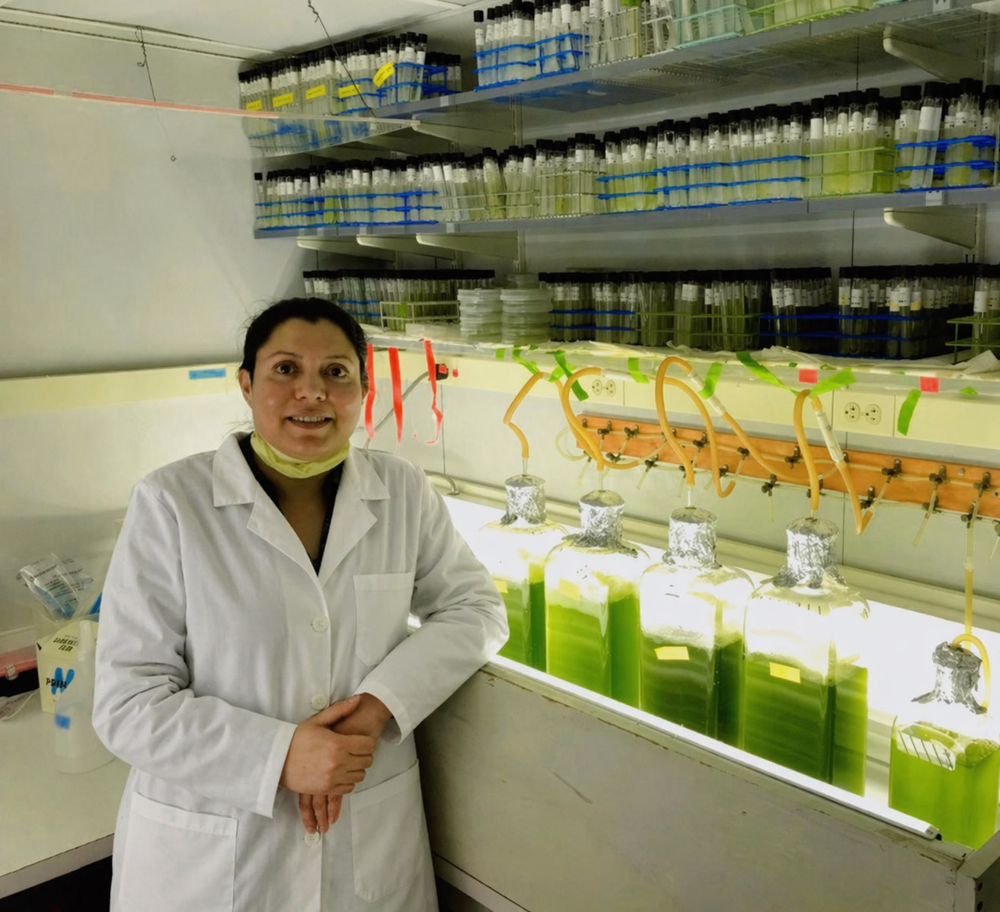

India
Foundational training in biotechnology, biochemistry, and molecular cell biology.

I am Dr. Tooba Quidwai, a molecular and cell biologist with more than a decade of research experience across India, Germany, the United Kingdom, and the United States, working across a range of disease-mechanism topics.
During my master's training in biotechnology at Pune University, I was introduced to stem cell biology at the National Centre for Cell Science, Pune, and to the life cycle of Plasmodium falciparum at the Central Drug Research Institute, India. Thereafter, as a Junior Research Fellow at the National Institute of Immunology, India, I studied the biochemistry of the hGBP1 protein and later moved to the Max Planck Institute of Molecular Physiology, Dortmund, where I explored links between the Ras pathway and cilia.
It was at Max Planck that I was first introduced to ciliopathies and became deeply interested in their remarkably broad impact on human physiology. Cilia are cellular antennae that support signaling and motility functions and are present in almost every cell type in the human body. Defects in cilia give rise to a wide spectrum of disorders, collectively termed ciliopathies, including blindness, kidney cysts, obesity, neurodevelopmental disorders, respiratory disease, infertility, developmental abnormalities, and cancer.
Because cilia are diffraction-limited structures, typically around 200 nm in diameter and 2 to 5 um in length, I became eager to build the imaging skill set needed to visualize them at higher structural resolution. That curiosity took me to EMBL Heidelberg, where I worked in the lab of Professor Jonas Ries and developed expertise in a wide range of super-resolution imaging methods while studying platelet microtubules and advancing imaging workflows.
With training in advanced imaging and an emerging foundation in ciliopathy biology, I moved to the MRC Institute of Genetics and Cancer at the University of Edinburgh for my doctoral work in the lab of Professor Pleasantine Mill. During this time, I discovered the role of WDR35/IFT121 in vesicular trafficking to cilia, a process critical for functional cilia formation and normal embryonic development, using proteomics, genomics, bioinformatics, and advanced imaging. My PhD was supported by MRC and Edinburgh Super-Resolution Imaging Consortium grants, and I also received an EMBO Short-Term Fellowship and Moray Endorsement Fund support to complete 3D-TEM and correlative light and electron microscopy in the lab of Professor Gaia Pigino, then based at MPI-CBG Dresden.
My main PhD project evolved into an extensive international collaboration across laboratories in MPI-CBG, Germany, the Aarhus University, Denmark protein science group of Professor Esben Lorentzen, and MRC-IGC, UK, and it remains one of the clearest demonstrations of my ability to deliver high-impact interdisciplinary science across institutions and countries. Alongside my main project on WDR35 and functional cilia, I also contributed to work on PCM1 and PLAA proteins and developed imaging methods that became integral to the research environment in the lab.
Following this, I contributed to imaging studies of cGAS in Professor Yanick Crow's lab at MRC-IGC and then moved to UMass Chan Medical School in Worcester, USA, to work with Professor George Witman and Dr. Sumeda Nandadasa on proteomics of central apparatus proteins in Chlamydomonas and imaging kidney cilia in TMEM67 and ADAMTS9 mutant systems.
Over the past decade, I have invested deeply in traveling across the globe to develop cutting-edge interdisciplinary expertise, and I aim to apply that training to fundamental biological questions that improve our understanding of disease mechanisms. More recently, I have contributed to research grants with Professor Lotte Pedersen at the University of Copenhagen, and I am currently exploring opportunities related to ciliopathies associated with obesity, diabetes, and kidney disorders. I am also open to industry roles.
Foundational training in biotechnology, biochemistry, and molecular cell biology.
Ras signaling, live-cell super-resolution microscopy, and methodological imaging development.
PhD and postdoctoral research on ciliary transport, ultrastructure, and disease mechanisms.
Postdoctoral work on kidney cystogenesis, TMEM67 biology, and central apparatus function.
Collaborations, invited talks, and cross-border academic exchange spanning multiple research communities.
Work on mother centriole remodeling and ciliogenesis, contributing to a broader mechanistic understanding of how centriolar satellites support cilium assembly.
Mechanistic study showing that WDR35/IFT121 functions in a coat-protein-like system required for transporting membrane cargo vesicles to cilia.
Disease-mechanism study linking PLAA mutations to severe infantile encephalopathy through defects in ubiquitin-mediated endolysosomal degradation.
Methods paper developing specific caged-fluorophore labeling strategies for dual-color imaging and live-cell super-resolution microscopy.
Conference abstract representation of the WDR35 transport work that complements the peer-reviewed eLife study.
Doctoral thesis centered on the role of WDR35 in ciliary biogenesis, trafficking, and formation of functional cilia.
Preprint version of the WDR35 trafficking story, describing coatomer-like transport of ciliary membrane proteins from the Golgi to the cilium.
Preprint combining imaging and quantitative analysis to study how cytoskeletal mechanics shape platelet size and activation dynamics.
Microscopy workflows used as primary tools for biological discovery.
STORM, PALM, STED, SIM, CLEM, 3D-TEM, Airyscan, Hyvolution, deconvolution, FRAP, FRET, FLIM.
ImageJ, Imaris, Huygens, IMOD, tomography, segmentation, and image processing pipelines.
Experimental range from cloning and culture systems to proteomics and genome editing.
CRISPR, cloning, PCR and RT-PCR, immunoprecipitation, mass spectrometry, western blotting, ELISA, mutagenesis, protein purification.
MEF, human fibroblasts, IMCD3, MDCK, HepG2, RP2, platelets, stem-cell related systems, Chlamydomonas culture, mouse kidney, and Plasmodium falciparum culture.
Structural and quantitative support for image-heavy and proteomics-heavy biology.
AlphaFold, Swiss Model, Phyre2, HHblits, PyMOL, Coot, MATLAB, basic Python, BioRender, and scientific visualization tools.
Adobe Photoshop, Illustrator, InDesign, Office tools, and science communication coursework.
A guided time-lapse movie built from confocal overview slides and matched zoom-in regions, moving through different parts of the kidney while preserving the relationship between the wide field and the higher-magnification pop-up view.
Three aligned views are shown here as confocal imaging, single-color STED of WDR35, and a TEM 300 nm section, with the method scale and resolution comparison integrated directly into the composed figure.
IFT88 shows retrograde transport defect in the mutants. The collage groups shown in the figure are Wdr35+/+, Dync2h1-/-, and Wdr35-/-.
A comparative platelet imaging reel combining confocal acquisition with PALM-based microtubule and gamma-tubulin views to highlight how different microscopy methods resolve platelet architecture at different scales.